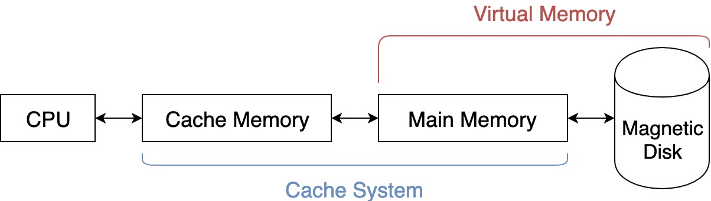

<!DOCTYPE HTML>
<html lang="zh-tw" >
    <head>
        <meta charset="UTF-8">
        <meta content="text/html; charset=utf-8" http-equiv="Content-Type">
        <title>05. 容量大且速度快的記憶體 · Prepare CSE Master Cheatsheet</title>
        <meta http-equiv="X-UA-Compatible" content="IE=edge" />
        <meta name="description" content="">
        <meta name="generator" content="GitBook 3.2.3">
        <meta name="author" content="saberLiou <saberliou@gmail.com>">
        
        
    
    <link rel="stylesheet" href="../gitbook/style.css">

    
            
                
                <link rel="stylesheet" href="../gitbook/gitbook-plugin-toggle-chapters/toggle.css">
                
            
                
                <link rel="stylesheet" href="../gitbook/gitbook-plugin-splitter/splitter.css">
                
            
                
                <link rel="stylesheet" href="../gitbook/gitbook-plugin-etoc/plugin.css">
                
            
                
                <link rel="stylesheet" href="../gitbook/gitbook-plugin-hints/plugin-hints.css">
                
            
                
                <link rel="stylesheet" href="../gitbook/gitbook-plugin-katex/katex.min.css">
                
            
                
                <link rel="stylesheet" href="../gitbook/gitbook-plugin-code/plugin.css">
                
            
                
                <link rel="stylesheet" href="../gitbook/gitbook-plugin-page-footer-ex/style/plugin.css">
                
            
                
                <link rel="stylesheet" href="../gitbook/gitbook-plugin-back-to-top-button/plugin.css">
                
            
                
                <link rel="stylesheet" href="../gitbook/gitbook-plugin-highlight/website.css">
                
            
                
                <link rel="stylesheet" href="../gitbook/gitbook-plugin-search/search.css">
                
            
                
                <link rel="stylesheet" href="../gitbook/gitbook-plugin-fontsettings/website.css">
                
            
                
                <link rel="stylesheet" href="../gitbook/gitbook-plugin-theme-vuejs-2/vue.css">
                
            
        

    

    
        
        <link rel="stylesheet" href="../styles/website.css">
        
    
        
    
        
    
        
    
        
    
        
    

        
    
    
    <meta name="HandheldFriendly" content="true"/>
    <meta name="viewport" content="width=device-width, initial-scale=1, user-scalable=no">
    <meta name="apple-mobile-web-app-capable" content="yes">
    <meta name="apple-mobile-web-app-status-bar-style" content="black">
    <link rel="apple-touch-icon-precomposed" sizes="152x152" href="../gitbook/images/apple-touch-icon-precomposed-152.png">
    <link rel="shortcut icon" href="../gitbook/images/favicon.ico" type="image/x-icon">

    
    
    <link rel="prev" href="Chapter05.html" />
    

    </head>
    <body>
        
<div class="book">
    <div class="book-summary">
        
            
<div id="book-search-input" role="search">
    <input type="text" placeholder="輸入並搜尋" />
</div>

            
                <nav role="navigation">
                


<ul class="summary">
    
    

    

    
        
        
    
        <li class="chapter " data-level="1.1" data-path="../">
            
                <a href="../">
            
                    
                    Introduction
            
                </a>
            

            
        </li>
    

    
        
        <li class="header">Subjects</li>
        
        
    
        <li class="chapter " data-level="2.1" data-path="../LinearAlgebra/">
            
                <a href="../LinearAlgebra/">
            
                    
                    Linear Algebra
            
                </a>
            

            
            <ul class="articles">
                
    
        <li class="chapter " data-level="2.1.1" data-path="../LinearAlgebra/Chapter00/">
            
                <a href="../LinearAlgebra/Chapter00/">
            
                    
                    00. 基礎數學
            
                </a>
            

            
        </li>
    
        <li class="chapter " data-level="2.1.2" data-path="../LinearAlgebra/Chapter01/">
            
                <a href="../LinearAlgebra/Chapter01/">
            
                    
                    01. 矩陣與線性方程組
            
                </a>
            

            
        </li>
    
        <li class="chapter " data-level="2.1.3" data-path="../LinearAlgebra/Chapter02/">
            
                <a href="../LinearAlgebra/Chapter02/">
            
                    
                    02. 行列式
            
                </a>
            

            
        </li>
    
        <li class="chapter " data-level="2.1.4" data-path="../LinearAlgebra/Chapter03/">
            
                <a href="../LinearAlgebra/Chapter03/">
            
                    
                    03. 向量空間
            
                </a>
            

            
            <ul class="articles">
                
    
        <li class="chapter " data-level="2.1.4.1" data-path="../LinearAlgebra/Chapter03/01.html">
            
                <a href="../LinearAlgebra/Chapter03/01.html">
            
                    
                    3-1. 向量空間
            
                </a>
            

            
        </li>
    
        <li class="chapter " data-level="2.1.4.2" data-path="../LinearAlgebra/Chapter03/02.html">
            
                <a href="../LinearAlgebra/Chapter03/02.html">
            
                    
                    3-2. 子空間
            
                </a>
            

            
        </li>
    
        <li class="chapter " data-level="2.1.4.3" data-path="../LinearAlgebra/Chapter03/03.html">
            
                <a href="../LinearAlgebra/Chapter03/03.html">
            
                    
                    3-3. 生成與線性獨立
            
                </a>
            

            
        </li>
    
        <li class="chapter " data-level="2.1.4.4" data-path="../LinearAlgebra/Chapter03/04.html">
            
                <a href="../LinearAlgebra/Chapter03/04.html">
            
                    
                    3-4. 基底與維度
            
                </a>
            

            
        </li>
    
        <li class="chapter " data-level="2.1.4.5" data-path="../LinearAlgebra/Chapter03/05.html">
            
                <a href="../LinearAlgebra/Chapter03/05.html">
            
                    
                    3-5. 直和
            
                </a>
            

            
        </li>
    

            </ul>
            
        </li>
    
        <li class="chapter " data-level="2.1.5" data-path="../LinearAlgebra/Chapter04/">
            
                <a href="../LinearAlgebra/Chapter04/">
            
                    
                    04. 線性映射
            
                </a>
            

            
            <ul class="articles">
                
    
        <li class="chapter " data-level="2.1.5.1" data-path="../LinearAlgebra/Chapter04/01.html">
            
                <a href="../LinearAlgebra/Chapter04/01.html">
            
                    
                    4-1. 線性映射
            
                </a>
            

            
        </li>
    
        <li class="chapter " data-level="2.1.5.2" data-path="../LinearAlgebra/Chapter04/02.html">
            
                <a href="../LinearAlgebra/Chapter04/02.html">
            
                    
                    4-2. 座標化
            
                </a>
            

            
        </li>
    
        <li class="chapter " data-level="2.1.5.3" data-path="../LinearAlgebra/Chapter04/03.html">
            
                <a href="../LinearAlgebra/Chapter04/03.html">
            
                    
                    4-3. 矩陣表示法與換底公式
            
                </a>
            

            
        </li>
    
        <li class="chapter " data-level="2.1.5.4" data-path="../LinearAlgebra/Chapter04/04.html">
            
                <a href="../LinearAlgebra/Chapter04/04.html">
            
                    
                    4-4. 核空間與像集
            
                </a>
            

            
        </li>
    
        <li class="chapter " data-level="2.1.5.5" data-path="../LinearAlgebra/Chapter04/05.html">
            
                <a href="../LinearAlgebra/Chapter04/05.html">
            
                    
                    4-5. 矩陣的秩
            
                </a>
            

            
        </li>
    

            </ul>
            
        </li>
    

            </ul>
            
        </li>
    
        <li class="chapter " data-level="2.2" data-path="../DiscreteMathematics/">
            
                <a href="../DiscreteMathematics/">
            
                    
                    Discrete Mathematics
            
                </a>
            

            
            <ul class="articles">
                
    
        <li class="chapter " data-level="2.2.1" data-path="../DiscreteMathematics/Chapter01/">
            
                <a href="../DiscreteMathematics/Chapter01/">
            
                    
                    01. 基礎數學
            
                </a>
            

            
        </li>
    
        <li class="chapter " data-level="2.2.2" data-path="../DiscreteMathematics/Chapter02/">
            
                <a href="../DiscreteMathematics/Chapter02/">
            
                    
                    02. 關係與函數
            
                </a>
            

            
            <ul class="articles">
                
    
        <li class="chapter " data-level="2.2.2.1" data-path="../DiscreteMathematics/Chapter02/06.html">
            
                <a href="../DiscreteMathematics/Chapter02/06.html">
            
                    
                    2-6. 鴿籠原理
            
                </a>
            

            
        </li>
    
        <li class="chapter " data-level="2.2.2.2" data-path="../DiscreteMathematics/Chapter02/07.html">
            
                <a href="../DiscreteMathematics/Chapter02/07.html">
            
                    
                    2-7. 計數問題
            
                </a>
            

            
        </li>
    

            </ul>
            
        </li>
    
        <li class="chapter " data-level="2.2.3" data-path="../DiscreteMathematics/Chapter03/">
            
                <a href="../DiscreteMathematics/Chapter03/">
            
                    
                    03. 排列組合與排容原理
            
                </a>
            

            
            <ul class="articles">
                
    
        <li class="chapter " data-level="2.2.3.1" data-path="../DiscreteMathematics/Chapter03/01.html">
            
                <a href="../DiscreteMathematics/Chapter03/01.html">
            
                    
                    3-1. 基本計數原理
            
                </a>
            

            
        </li>
    
        <li class="chapter " data-level="2.2.3.2" data-path="../DiscreteMathematics/Chapter03/02.html">
            
                <a href="../DiscreteMathematics/Chapter03/02.html">
            
                    
                    3-2. 排列
            
                </a>
            

            
        </li>
    
        <li class="chapter " data-level="2.2.3.3" data-path="../DiscreteMathematics/Chapter03/03.html">
            
                <a href="../DiscreteMathematics/Chapter03/03.html">
            
                    
                    3-3. 組合
            
                </a>
            

            
        </li>
    
        <li class="chapter " data-level="2.2.3.4" data-path="../DiscreteMathematics/Chapter03/04.html">
            
                <a href="../DiscreteMathematics/Chapter03/04.html">
            
                    
                    3-4. 排容原理
            
                </a>
            

            
        </li>
    
        <li class="chapter " data-level="2.2.3.5" data-path="../DiscreteMathematics/Chapter03/05.html">
            
                <a href="../DiscreteMathematics/Chapter03/05.html">
            
                    
                    3-5. 亂序及禁位問題
            
                </a>
            

            
        </li>
    

            </ul>
            
        </li>
    
        <li class="chapter " data-level="2.2.4" data-path="../DiscreteMathematics/Chapter04/">
            
                <a href="../DiscreteMathematics/Chapter04/">
            
                    
                    04. 生成函數
            
                </a>
            

            
            <ul class="articles">
                
    
        <li class="chapter " data-level="2.2.4.1" data-path="../DiscreteMathematics/Chapter04/01.html">
            
                <a href="../DiscreteMathematics/Chapter04/01.html">
            
                    
                    4-1. 一般生成函數
            
                </a>
            

            
        </li>
    
        <li class="chapter " data-level="2.2.4.2" data-path="../DiscreteMathematics/Chapter04/02.html">
            
                <a href="../DiscreteMathematics/Chapter04/02.html">
            
                    
                    4-2. 整數的分割
            
                </a>
            

            
        </li>
    
        <li class="chapter " data-level="2.2.4.3" data-path="../DiscreteMathematics/Chapter04/03.html">
            
                <a href="../DiscreteMathematics/Chapter04/03.html">
            
                    
                    4-3. 指數生成函數
            
                </a>
            

            
        </li>
    
        <li class="chapter " data-level="2.2.4.4" data-path="../DiscreteMathematics/Chapter04/04.html">
            
                <a href="../DiscreteMathematics/Chapter04/04.html">
            
                    
                    4-4. 求和算子
            
                </a>
            

            
        </li>
    

            </ul>
            
        </li>
    
        <li class="chapter " data-level="2.2.5" data-path="../DiscreteMathematics/Chapter05/">
            
                <a href="../DiscreteMathematics/Chapter05/">
            
                    
                    05. 遞迴關係
            
                </a>
            

            
            <ul class="articles">
                
    
        <li class="chapter " data-level="2.2.5.1" data-path="../DiscreteMathematics/Chapter05/01.html">
            
                <a href="../DiscreteMathematics/Chapter05/01.html">
            
                    
                    5-1. 遞迴關係式
            
                </a>
            

            
        </li>
    
        <li class="chapter " data-level="2.2.5.2" data-path="../DiscreteMathematics/Chapter05/02.html">
            
                <a href="../DiscreteMathematics/Chapter05/02.html">
            
                    
                    5-2. 常數係線性遞迴關係式
            
                </a>
            

            
        </li>
    
        <li class="chapter " data-level="2.2.5.3" data-path="../DiscreteMathematics/Chapter05/03.html">
            
                <a href="../DiscreteMathematics/Chapter05/03.html">
            
                    
                    5-3. 轉換法求解遞迴關係式
            
                </a>
            

            
        </li>
    
        <li class="chapter " data-level="2.2.5.4" data-path="../DiscreteMathematics/Chapter05/04.html">
            
                <a href="../DiscreteMathematics/Chapter05/04.html">
            
                    
                    5-4. 生成函數法求解遞迴關係式
            
                </a>
            

            
        </li>
    
        <li class="chapter " data-level="2.2.5.5" data-path="../DiscreteMathematics/Chapter05/05.html">
            
                <a href="../DiscreteMathematics/Chapter05/05.html">
            
                    
                    5-5. 應用問題
            
                </a>
            

            
        </li>
    
        <li class="chapter " data-level="2.2.5.6" data-path="../DiscreteMathematics/Chapter05/06.html">
            
                <a href="../DiscreteMathematics/Chapter05/06.html">
            
                    
                    5-6. 特殊類型遞迴關係式
            
                </a>
            

            
        </li>
    

            </ul>
            
        </li>
    
        <li class="chapter " data-level="2.2.6" data-path="../DiscreteMathematics/Chapter06/">
            
                <a href="../DiscreteMathematics/Chapter06/">
            
                    
                    06. 圖論
            
                </a>
            

            
            <ul class="articles">
                
    
        <li class="chapter " data-level="2.2.6.1" data-path="../DiscreteMathematics/Chapter06/01.html">
            
                <a href="../DiscreteMathematics/Chapter06/01.html">
            
                    
                    6-1. 圖的種類及術語
            
                </a>
            

            
        </li>
    
        <li class="chapter " data-level="2.2.6.2" data-path="../DiscreteMathematics/Chapter06/02.html">
            
                <a href="../DiscreteMathematics/Chapter06/02.html">
            
                    
                    6-2. 圖形表示法與同構
            
                </a>
            

            
        </li>
    
        <li class="chapter " data-level="2.2.6.3" data-path="../DiscreteMathematics/Chapter06/03.html">
            
                <a href="../DiscreteMathematics/Chapter06/03.html">
            
                    
                    6-3. 圖的基本性質
            
                </a>
            

            
        </li>
    

            </ul>
            
        </li>
    

            </ul>
            
        </li>
    
        <li class="chapter " data-level="2.3" data-path="../DataStructure/">
            
                <a href="../DataStructure/">
            
                    
                    Data Structure
            
                </a>
            

            
            <ul class="articles">
                
    
        <li class="chapter " data-level="2.3.1" data-path="../DataStructure/Chapter01.html">
            
                <a href="../DataStructure/Chapter01.html">
            
                    
                    01. Basic Concepts
            
                </a>
            

            
        </li>
    
        <li class="chapter " data-level="2.3.2" data-path="../DataStructure/Chapter03.html">
            
                <a href="../DataStructure/Chapter03.html">
            
                    
                    03. Stack & Queue
            
                </a>
            

            
        </li>
    
        <li class="chapter " data-level="2.3.3" data-path="../DataStructure/Chapter06.html">
            
                <a href="../DataStructure/Chapter06.html">
            
                    
                    06. Graph
            
                </a>
            

            
        </li>
    

            </ul>
            
        </li>
    
        <li class="chapter " data-level="2.4" data-path="../Algorithm/">
            
                <a href="../Algorithm/">
            
                    
                    Algorithm
            
                </a>
            

            
        </li>
    
        <li class="chapter " data-level="2.5" data-path="../OperatingSystem/">
            
                <a href="../OperatingSystem/">
            
                    
                    Operating System
            
                </a>
            

            
            <ul class="articles">
                
    
        <li class="chapter " data-level="2.5.1" data-path="../OperatingSystem/Chapter01.html">
            
                <a href="../OperatingSystem/Chapter01.html">
            
                    
                    01. 作業系統及 System Types 介紹
            
                </a>
            

            
        </li>
    
        <li class="chapter " data-level="2.5.2" data-path="../OperatingSystem/Chapter02.html">
            
                <a href="../OperatingSystem/Chapter02.html">
            
                    
                    02. I/O 運作方式, Interrupt 介紹及 Hardware Resource Protection
            
                </a>
            

            
        </li>
    

            </ul>
            
        </li>
    
        <li class="chapter " data-level="2.6" data-path="./">
            
                <a href="./">
            
                    
                    Computer Organization
            
                </a>
            

            
            <ul class="articles">
                
    
        <li class="chapter " data-level="2.6.1" data-path="Chapter01.html">
            
                <a href="Chapter01.html">
            
                    
                    01. 指令: 計算機的語言
            
                </a>
            

            
        </li>
    
        <li class="chapter " data-level="2.6.2" data-path="Chapter02.html">
            
                <a href="Chapter02.html">
            
                    
                    02. 計算機算數
            
                </a>
            

            
        </li>
    
        <li class="chapter " data-level="2.6.3" data-path="Chapter03.html">
            
                <a href="Chapter03.html">
            
                    
                    03. 了解與評估計算機的效能
            
                </a>
            

            
        </li>
    
        <li class="chapter " data-level="2.6.4" data-path="Chapter04.html">
            
                <a href="Chapter04.html">
            
                    
                    04. 處理器：資料路徑與控制單元
            
                </a>
            

            
        </li>
    
        <li class="chapter " data-level="2.6.5" data-path="Chapter05.html">
            
                <a href="Chapter05.html">
            
                    
                    05. 利用管線增加效能
            
                </a>
            

            
        </li>
    
        <li class="chapter active" data-level="2.6.6" data-path="Chapter06.html">
            
                <a href="Chapter06.html">
            
                    
                    05. 容量大且速度快的記憶體
            
                </a>
            

            
        </li>
    

            </ul>
            
        </li>
    

    
        
        <li class="divider"></li>
        
        
    
        <li class="chapter " data-level="3.1" >
            
                <a target="_blank" href="https://github.com/saberLiou">
            
                    
                    Author's Github
            
                </a>
            

            
        </li>
    

    

    <li class="divider"></li>

    <li>
        <a href="https://www.gitbook.com" target="blank" class="gitbook-link">
            本書使用 GitBook 釋出
        </a>
    </li>
</ul>


                </nav>
            
        
    </div>

    <div class="book-body">
        
            <div class="body-inner">
                

                    

<div class="book-header" role="navigation">
    

    <!-- Title -->
    <h1>
        <i class="fa fa-circle-o-notch fa-spin"></i>
        <a href=".." >05. 容量大且速度快的記憶體</a>
    </h1>
</div>


                    <div class="page-wrapper" tabindex="-1" role="main">
                        <div class="page-inner">
                            
<div id="book-search-results">
    <div class="search-noresults">
    
                                <section class="normal markdown-section">
                                
                                <h1 id="05-&#x5BB9;&#x91CF;&#x5927;&#x4E14;&#x901F;&#x5EA6;&#x5FEB;&#x7684;&#x8A18;&#x61B6;&#x9AD4;">05. &#x5BB9;&#x91CF;&#x5927;&#x4E14;&#x901F;&#x5EA6;&#x5FEB;&#x7684;&#x8A18;&#x61B6;&#x9AD4;</h1>
<!-- toc --><div id="toc" class="toc">

<ul>
<li><a href="#principle-of-locality">&#x5340;&#x57DF;&#x6027;&#x539F;&#x5247; (Principle of Locality)</a></li>
<li><a href="#&#x4E0D;&#x540C;&#x7684;&#x8A18;&#x61B6;&#x9AD4;&#x6280;&#x8853;">&#x4E0D;&#x540C;&#x7684;&#x8A18;&#x61B6;&#x9AD4;&#x6280;&#x8853;</a></li>
<li><a href="#memory-hierarchy">&#x8A18;&#x61B6;&#x9AD4;&#x968E;&#x5C64; (Memory Hierarchy)</a><ul>
<li><a href="#&#x5340;&#x584A;&#x7684;&#x547D;&#x4E2D;-hit-&#x8207;&#x5931;&#x8AA4;-miss">&#x5340;&#x584A;&#x7684;&#x547D;&#x4E2D; (hit) &#x8207;&#x5931;&#x8AA4; (miss)</a></li>
</ul>
</li>
</ul>

</div><!-- tocstop -->
<h2 id="principle-of-locality">&#x5340;&#x57DF;&#x6027;&#x539F;&#x5247; (Principle of Locality)   </h2>
<p>&#x7A0B;&#x5F0F;&#x7684;&#x57F7;&#x884C;&#x5728;&#x4EFB;&#x4F55;&#x4E00;&#x500B;&#x6642;&#x9593;&#x9EDE;&#x53EA;&#x6703;&#x5B58;&#x53D6;&#x4E00;&#x5C0F;&#x90E8;&#x5206;&#x7684;&#x8A18;&#x61B6;&#x9AD4;&#x4F4D;&#x5740;&#x7A7A;&#x9593;&#xFF0C;&#x53C8;&#x7A31; <strong>locality of reference</strong></p>
<ul>
<li><strong>&#x6642;&#x9593;&#x5340;&#x57DF;&#x6027;(temporal locality)</strong>: &#x5982;&#x679C;&#x4E00;&#x500B;&#x6307;&#x4EE4;&#x6216;&#x8CC7;&#x6599;&#x88AB;&#x5B58;&#x53D6;&#x5230;&#xFF0C;&#x90A3;&#x9EBC;&#x5B83;<strong>&#x5F88;&#x5FEB;&#x53C8;&#x6703;</strong>&#x88AB;&#x5B58;&#x53D6;&#x5230;<blockquote>
<p><span class="katex"><span class="katex-mathml"><math><semantics><mrow><msup><mrow></mrow><mrow><mi>e</mi><mi>x</mi><mi mathvariant="normal">.</mi></mrow></msup></mrow><annotation encoding="application/x-tex"> ^{ex.} </annotation></semantics></math></span><span class="katex-html" aria-hidden="true"><span class="strut" style="height:0.664392em;"></span><span class="strut bottom" style="height:0.664392em;vertical-align:0em;"></span><span class="base textstyle uncramped"><span class="mord"><span></span><span class="msupsub"><span class="vlist"><span style="top:-0.363em;margin-right:0.05em;"><span class="fontsize-ensurer reset-size5 size5"><span style="font-size:0em;">&#x200B;</span></span><span class="reset-textstyle scriptstyle uncramped mtight"><span class="mord scriptstyle uncramped mtight"><span class="mord mathit mtight">e</span><span class="mord mathit mtight">x</span><span class="mord mathrm mtight">.</span></span></span></span><span class="baseline-fix"><span class="fontsize-ensurer reset-size5 size5"><span style="font-size:0em;">&#x200B;</span></span>&#x200B;</span></span></span></span></span></span></span> <strong>&#x8FF4;&#x5708;</strong>&#x4E2D;&#x7684;&#x6307;&#x4EE4;&#x6216;&#x8CC7;&#x6599;</p>
</blockquote>
</li>
<li><strong>&#x7A7A;&#x9593;&#x5340;&#x57DF;&#x6027;(spatial locality)</strong>: &#x5982;&#x679C;&#x4E00;&#x500B;&#x6307;&#x4EE4;&#x6216;&#x8CC7;&#x6599;&#x88AB;&#x5B58;&#x53D6;&#x5230;&#xFF0C;&#x90A3;&#x9EBC;&#x5B83;<strong>&#x4F4D;&#x5740;&#x9644;&#x8FD1;&#x7684;&#x6307;&#x4EE4;&#x6216;&#x8CC7;&#x6599;</strong>&#x4E5F;&#x6703;&#x5F88;&#x5FEB;&#x88AB;&#x5B58;&#x53D6;&#x5230;<blockquote>
<p><span class="katex"><span class="katex-mathml"><math><semantics><mrow><msup><mrow></mrow><mrow><mi>e</mi><mi>x</mi><mi mathvariant="normal">.</mi></mrow></msup></mrow><annotation encoding="application/x-tex"> ^{ex.} </annotation></semantics></math></span><span class="katex-html" aria-hidden="true"><span class="strut" style="height:0.664392em;"></span><span class="strut bottom" style="height:0.664392em;vertical-align:0em;"></span><span class="base textstyle uncramped"><span class="mord"><span></span><span class="msupsub"><span class="vlist"><span style="top:-0.363em;margin-right:0.05em;"><span class="fontsize-ensurer reset-size5 size5"><span style="font-size:0em;">&#x200B;</span></span><span class="reset-textstyle scriptstyle uncramped mtight"><span class="mord scriptstyle uncramped mtight"><span class="mord mathit mtight">e</span><span class="mord mathit mtight">x</span><span class="mord mathrm mtight">.</span></span></span></span><span class="baseline-fix"><span class="fontsize-ensurer reset-size5 size5"><span style="font-size:0em;">&#x200B;</span></span>&#x200B;</span></span></span></span></span></span></span> <strong>&#x5FAA;&#x5E8F;&#x57F7;&#x884C;&#x7684;&#x6307;&#x4EE4;</strong>&#x6216;<strong>&#x9663;&#x5217;</strong></p>
</blockquote>
</li>
</ul>
<blockquote>
<p><span class="katex"><span class="katex-mathml"><math><semantics><mrow><msup><mrow></mrow><mrow><mi>e</mi><mi>x</mi><mi mathvariant="normal">.</mi></mrow></msup></mrow><annotation encoding="application/x-tex"> ^{ex.} </annotation></semantics></math></span><span class="katex-html" aria-hidden="true"><span class="strut" style="height:0.664392em;"></span><span class="strut bottom" style="height:0.664392em;vertical-align:0em;"></span><span class="base textstyle uncramped"><span class="mord"><span></span><span class="msupsub"><span class="vlist"><span style="top:-0.363em;margin-right:0.05em;"><span class="fontsize-ensurer reset-size5 size5"><span style="font-size:0em;">&#x200B;</span></span><span class="reset-textstyle scriptstyle uncramped mtight"><span class="mord scriptstyle uncramped mtight"><span class="mord mathit mtight">e</span><span class="mord mathit mtight">x</span><span class="mord mathrm mtight">.</span></span></span></span><span class="baseline-fix"><span class="fontsize-ensurer reset-size5 size5"><span style="font-size:0em;">&#x200B;</span></span>&#x200B;</span></span></span></span></span></span></span> Write a C program which exhibits the <em>temporal</em> and <em>spatial localities</em>.</p>
<pre><code class="lang-c"><span class="hljs-function"><span class="hljs-keyword">void</span> <span class="hljs-title">clearArray</span><span class="hljs-params">(<span class="hljs-keyword">int</span> <span class="hljs-built_in">array</span>[], <span class="hljs-keyword">int</span> size)</span> </span>{
    <span class="hljs-keyword">int</span> i;
    <span class="hljs-keyword">for</span> (i = <span class="hljs-number">0</span>; i &lt; size; i++) {
        <span class="hljs-built_in">array</span>[i] = <span class="hljs-number">0</span>;   <span class="hljs-comment">// i: temporal locality; array: spatial locality</span>
    }
}
</code></pre>
</blockquote>
<h2 id="&#x4E0D;&#x540C;&#x7684;&#x8A18;&#x61B6;&#x9AD4;&#x6280;&#x8853;">&#x4E0D;&#x540C;&#x7684;&#x8A18;&#x61B6;&#x9AD4;&#x6280;&#x8853;</h2>
<p><span class="katex"><span class="katex-mathml"><math><semantics><mrow><mo>&#x2235;</mo></mrow><annotation encoding="application/x-tex"> \because </annotation></semantics></math></span><span class="katex-html" aria-hidden="true"><span class="strut" style="height:0.69224em;"></span><span class="strut bottom" style="height:0.69224em;vertical-align:0em;"></span><span class="base textstyle uncramped"><span class="mrel amsrm">&#x2235;</span></span></span></span> &#x8A18;&#x61B6;&#x9AD4;<strong>&#x5BB9;&#x91CF;</strong> <span class="katex"><span class="katex-mathml"><math><semantics><mrow><mo>&#x2191;</mo><mo>&#x21D2;</mo></mrow><annotation encoding="application/x-tex"> \uparrow \Rightarrow </annotation></semantics></math></span><span class="katex-html" aria-hidden="true"><span class="strut" style="height:0.69444em;"></span><span class="strut bottom" style="height:0.8888799999999999em;vertical-align:-0.19444em;"></span><span class="base textstyle uncramped"><span class="mrel">&#x2191;</span><span class="mrel">&#x21D2;</span></span></span></span> &#x627E;&#x5C0B;&#x5B58;&#x53D6;&#x4F4D;&#x5740;&#x7684;<strong>&#x89E3;&#x78BC;&#x6642;&#x9593;</strong> <span class="katex"><span class="katex-mathml"><math><semantics><mrow><mo>&#x2191;</mo><mo>&#x2234;</mo></mrow><annotation encoding="application/x-tex"> \uparrow \therefore </annotation></semantics></math></span><span class="katex-html" aria-hidden="true"><span class="strut" style="height:0.69444em;"></span><span class="strut bottom" style="height:0.8888799999999999em;vertical-align:-0.19444em;"></span><span class="base textstyle uncramped"><span class="mrel">&#x2191;</span><span class="mrel amsrm">&#x2234;</span></span></span></span> &#x8A18;&#x61B6;&#x9AD4;<strong>&#x901F;&#x5EA6;</strong> <span class="katex"><span class="katex-mathml"><math><semantics><mrow><mo>&#x2193;</mo></mrow><annotation encoding="application/x-tex"> \downarrow </annotation></semantics></math></span><span class="katex-html" aria-hidden="true"><span class="strut" style="height:0.69444em;"></span><span class="strut bottom" style="height:0.8888799999999999em;vertical-align:-0.19444em;"></span><span class="base textstyle uncramped"><span class="mrel">&#x2193;</span></span></span></span>&#xFF0C;&#x4E0D;&#x904E;&#x5E78;&#x597D;&#x6709; <strong><a href="#principle-of-locality">locality of reference</a></strong>&#xFF0C;&#x56E0;&#x6B64;&#x53EF;&#x4F7F;&#x7528;&#x4E0D;&#x540C;&#x7684;&#x5927;&#x5C0F;&#x8207;&#x901F;&#x5EA6;&#x7684;&#x8A18;&#x61B6;&#x9AD4;&#x7D44;&#x6210;<strong><a href="#memory-hierarchy">&#x968E;&#x5C64;&#x5F0F;&#x8A18;&#x61B6;&#x9AD4;</a></strong>&#x4F86;&#x9054;&#x5230;&#x5BB9;&#x91CF;&#x5927;&#x4E14;&#x901F;&#x5EA6;&#x5FEB;&#x4E4B;&#x9700;&#x6C42;&#xFF0C;&#x4EE5;&#x4E0B;&#x70BA;&#x4E09;&#x7A2E;&#x4E3B;&#x8981;&#x7684;&#x6280;&#x8853;:</p>
<ul>
<li><strong>&#x975C;&#x614B;&#x96A8;&#x6A5F;&#x5B58;&#x53D6;&#x8A18;&#x61B6;&#x9AD4;(Static Random Access Memory, SRAM)</strong></li>
<li><strong>&#x52D5;&#x614B;&#x96A8;&#x6A5F;&#x5B58;&#x53D6;&#x8A18;&#x61B6;&#x9AD4;(Dynamic Random Access Memory, DRAM)</strong></li>
</ul>
<table>
<thead>
<tr>
<th style="text-align:center">&#x4E00;&#x4F4D;&#x5143;&#x7684;&#x5132;&#x5B58;&#x7D30;&#x80DE;</th>
<th style="text-align:center">SRAM</th>
<th style="text-align:center">DRAM</th>
</tr>
</thead>
<tbody>
<tr>
<td style="text-align:center">1 bit storage</td>
<td style="text-align:center">&#x5169;&#x500B;<strong>&#x53CD;&#x5411;&#x9598;(inverter)</strong>&#x5F62;&#x6210; <strong>latch</strong></td>
<td style="text-align:center">&#x4EE5;&#x96FB;&#x8377;&#x5132;&#x5B58;&#x65BC;<strong>&#x9700; refresh</strong> &#x4E4B;<strong>&#x96FB;&#x5BB9;&#x5668;(capacitor)</strong></td>
</tr>
<tr>
<td style="text-align:center"><strong>&#x9AD4;&#x7A4D;</strong></td>
<td style="text-align:center"><strong>&#x5927;</strong></td>
<td style="text-align:center"><strong>&#x5C0F;</strong></td>
</tr>
<tr>
<td style="text-align:center">&#x901F;&#x5EA6;</td>
<td style="text-align:center">&#x5FEB;</td>
<td style="text-align:center">&#x6162;</td>
</tr>
</tbody>
</table>
<ul>
<li><strong>&#x78C1;&#x789F;(Magnetic Disk)</strong></li>
</ul>
<h2 id="memory-hierarchy">&#x8A18;&#x61B6;&#x9AD4;&#x968E;&#x5C64; (Memory Hierarchy)    </h2>
<p>&#x76EE;&#x7684;: &#x8B93;&#x4F7F;&#x7528;&#x8005;&#x80FD;&#x7528;<strong>&#x6700;&#x4FBF;&#x5B9C;&#x7684;&#x6280;&#x8853;</strong>&#x4F86;&#x64C1;&#x6709;&#x8DB3;&#x5920;&#x7684;&#x8A18;&#x61B6;&#x9AD4;&#xFF0C;&#x4E14;&#x5229;&#x7528;&#x6700;&#x5FEB;&#x7684;&#x8A18;&#x61B6;&#x9AD4;&#x4F86;&#x63D0;&#x4F9B;<strong>&#x6700;&#x5FEB;&#x7684;&#x5B58;&#x53D6;&#x901F;&#x5EA6;</strong></p>
<table>
<thead>
<tr>
<th style="text-align:center">&#x6280;&#x8853;</th>
<th style="text-align:center">&#x8DDD;&#x96E2; CPU</th>
<th style="text-align:center">&#x901F;&#x5EA6;</th>
<th style="text-align:center">&#x5BB9;&#x91CF;</th>
<th style="text-align:center">$/bit</th>
</tr>
</thead>
<tbody>
<tr>
<td style="text-align:center">SRAM</td>
<td style="text-align:center">&#x8FD1;</td>
<td style="text-align:center">&#x5FEB;</td>
<td style="text-align:center">&#x5C0F;</td>
<td style="text-align:center">&#x9AD8;</td>
</tr>
<tr>
<td style="text-align:center">DRAM</td>
<td style="text-align:center"><span class="katex"><span class="katex-mathml"><math><semantics><mrow><mo>&#x2193;</mo></mrow><annotation encoding="application/x-tex"> \downarrow </annotation></semantics></math></span><span class="katex-html" aria-hidden="true"><span class="strut" style="height:0.69444em;"></span><span class="strut bottom" style="height:0.8888799999999999em;vertical-align:-0.19444em;"></span><span class="base textstyle uncramped"><span class="mrel">&#x2193;</span></span></span></span></td>
<td style="text-align:center"><span class="katex"><span class="katex-mathml"><math><semantics><mrow><mo>&#x2193;</mo></mrow><annotation encoding="application/x-tex"> \downarrow </annotation></semantics></math></span><span class="katex-html" aria-hidden="true"><span class="strut" style="height:0.69444em;"></span><span class="strut bottom" style="height:0.8888799999999999em;vertical-align:-0.19444em;"></span><span class="base textstyle uncramped"><span class="mrel">&#x2193;</span></span></span></span></td>
<td style="text-align:center"><span class="katex"><span class="katex-mathml"><math><semantics><mrow><mo>&#x2191;</mo></mrow><annotation encoding="application/x-tex"> \uparrow </annotation></semantics></math></span><span class="katex-html" aria-hidden="true"><span class="strut" style="height:0.69444em;"></span><span class="strut bottom" style="height:0.8888799999999999em;vertical-align:-0.19444em;"></span><span class="base textstyle uncramped"><span class="mrel">&#x2191;</span></span></span></span></td>
<td style="text-align:center"><span class="katex"><span class="katex-mathml"><math><semantics><mrow><mo>&#x2193;</mo></mrow><annotation encoding="application/x-tex"> \downarrow </annotation></semantics></math></span><span class="katex-html" aria-hidden="true"><span class="strut" style="height:0.69444em;"></span><span class="strut bottom" style="height:0.8888799999999999em;vertical-align:-0.19444em;"></span><span class="base textstyle uncramped"><span class="mrel">&#x2193;</span></span></span></span></td>
</tr>
<tr>
<td style="text-align:center">&#x78C1;&#x789F;</td>
<td style="text-align:center">&#x9060;</td>
<td style="text-align:center">&#x6162;</td>
<td style="text-align:center">&#x5927;</td>
<td style="text-align:center">&#x4F4E;</td>
</tr>
</tbody>
</table>
<p></p>
<blockquote>
<p>&#x73FE;&#x884C;&#x6280;&#x8853;:</p>
<ul>
<li><strong>Cache</strong> Memory: <strong>SRAM</strong></li>
<li><strong>Main</strong> Memory: <strong>DRAM</strong></li>
</ul>
</blockquote>
<h3 id="&#x5340;&#x584A;&#x7684;&#x547D;&#x4E2D;-hit-&#x8207;&#x5931;&#x8AA4;-miss">&#x5340;&#x584A;&#x7684;&#x547D;&#x4E2D; (hit) &#x8207;&#x5931;&#x8AA4; (miss)</h3>
<ul>
<li>&#x5169;&#x8A18;&#x61B6;&#x9AD4;&#x5C64;&#x6B21;&#x4E2D;&#x6700;&#x5C0F;&#x7684;&#x8CC7;&#x6599;&#x50B3;&#x8F38;&#x55AE;&#x4F4D;&#x7A31;&#x70BA;<strong>&#x5340;&#x584A;(block)</strong>&#x6216;<strong>&#x884C;(line)</strong></li>
<li><strong>&#x547D;&#x4E2D;(hit)</strong>: CPU &#x53EF;&#x4EE5;&#x5728;<strong>&#x5C64;&#x6B21;&#x8F03;&#x8FD1;</strong>&#x7684;&#x8A18;&#x61B6;&#x9AD4;&#x4E2D;&#x627E;&#x5230;&#x9700;&#x8981;&#x7684;&#x8CC7;&#x6599;<blockquote>
<p>&#x6BD4;&#x7387;: <strong>&#x547D;&#x4E2D;&#x7387;(hit rate/ratio)</strong></p>
</blockquote>
</li>
<li><strong>&#x5931;&#x8AA4;(miss)</strong>: CPU &#x7121;&#x6CD5;&#x5728;&#x5C64;&#x6B21;&#x8F03;&#x8FD1;&#x7684;&#x8A18;&#x61B6;&#x9AD4;&#x4E2D;&#x627E;&#x5230;&#x9700;&#x8981;&#x7684;&#x8CC7;&#x6599;&#xFF0C;&#x9700;&#x8981;&#x81F3;&#x5C64;&#x6B21;&#x8F03;&#x9060;&#x7684;&#x8A18;&#x61B6;&#x9AD4;&#x88E1;&#x627E;&#x5C0B;&#x5305;&#x542B;&#x6B64;&#x8CC7;&#x6599;&#x7684;&#x5340;&#x584A;<blockquote>
<p>&#x6BD4;&#x7387;: <strong>&#x5931;&#x8AA4;&#x7387;(miss rate)</strong> = 1 - hit rate</p>
</blockquote>
</li>
<li><strong>&#x547D;&#x4E2D;&#x6642;&#x9593;(hit time)</strong>: CPU &#x7528;&#x5728;<strong>&#x5224;&#x65B7;&#x547D;&#x4E2D;&#x6216;&#x5931;&#x8AA4;</strong> + <strong>&#x5F9E;&#x5C64;&#x6B21;&#x8F03;&#x8FD1;&#x7684;&#x8A18;&#x61B6;&#x9AD4;&#x5B58;&#x53D6;&#x8CC7;&#x6599;</strong>&#x7684;&#x6642;&#x9593;<blockquote>
<p>&#x5176;&#x4E2D;&#x5927;&#x90E8;&#x5206;&#x6642;&#x9593;&#x82B1;&#x5728;<strong>&#x8CC7;&#x6599;&#x5B58;&#x53D6;</strong>&#x4E0A;</p>
</blockquote>
</li>
<li><strong>&#x5931;&#x8AA4;&#x8655;&#x7F70;&#x6642;&#x9593;(miss penalty)</strong>: &#x5C64;&#x6B21;&#x8F03;&#x4F4E;&#x7684;&#x8A18;&#x61B6;&#x9AD4;<strong>&#x5340;&#x584A;&#x53D6;&#x4EE3;</strong>&#x5C64;&#x6B21;&#x8F03;&#x9AD8;&#x7684;&#x8A18;&#x61B6;&#x9AD4;&#x5340;&#x584A; + CPU &#x5B58;&#x53D6;&#x8A18;&#x61B6;&#x9AD4;&#x5340;&#x584A;&#x88E1;&#x7684;&#x8CC7;&#x6599;&#x4E4B;&#x6642;&#x9593;<blockquote>
<p>&#x5176;&#x4E2D;&#x5927;&#x90E8;&#x5206;&#x6642;&#x9593;&#x82B1;&#x5728;<strong>&#x8A18;&#x61B6;&#x9AD4;&#x5C64;&#x6B21;&#x9593;&#x7684;&#x5340;&#x584A;&#x53D6;&#x4EE3;</strong>&#x4E0A;</p>
</blockquote>
</li>
</ul>
<p><span class="katex"><span class="katex-mathml"><math><semantics><mrow><mo>&#x2192;</mo></mrow><annotation encoding="application/x-tex"> \rightarrow </annotation></semantics></math></span><span class="katex-html" aria-hidden="true"><span class="strut" style="height:0.36687em;"></span><span class="strut bottom" style="height:0.36687em;vertical-align:0em;"></span><span class="base textstyle uncramped"><span class="mrel">&#x2192;</span></span></span></span> <span class="katex"><span class="katex-mathml"><math><semantics><mrow><mo>&#x2235;</mo></mrow><annotation encoding="application/x-tex"> \because </annotation></semantics></math></span><span class="katex-html" aria-hidden="true"><span class="strut" style="height:0.69224em;"></span><span class="strut bottom" style="height:0.69224em;vertical-align:0em;"></span><span class="base textstyle uncramped"><span class="mrel amsrm">&#x2235;</span></span></span></span> <strong>&#x5C64;&#x6B21;&#x8DDD;&#x96E2; CPU &#x8F03;&#x8FD1;</strong>&#x7684;&#x8A18;&#x61B6;&#x9AD4;<strong>&#x5BB9;&#x91CF;&#x5C0F;</strong>&#x4E14;<strong>&#x5B58;&#x53D6;&#x901F;&#x5EA6;&#x5FEB;</strong> <span class="katex"><span class="katex-mathml"><math><semantics><mrow><mo>&#x2234;</mo></mrow><annotation encoding="application/x-tex"> \therefore </annotation></semantics></math></span><span class="katex-html" aria-hidden="true"><span class="strut" style="height:0.69224em;"></span><span class="strut bottom" style="height:0.69224em;vertical-align:0em;"></span><span class="base textstyle uncramped"><span class="mrel amsrm">&#x2234;</span></span></span></span> <strong>&#x547D;&#x4E2D;&#x6642;&#x9593; &lt;&lt; &#x5931;&#x8AA4;&#x8655;&#x7F70;&#x6642;&#x9593;</strong></p>
<ul>
<li><strong>&#x547D;&#x4E2D;&#x7387;&#x5920;&#x9AD8;</strong>:<ul>
<li>CPU &#x5B58;&#x53D6;&#x8CC7;&#x6599;&#x7684;&#x901F;&#x5EA6; = &#x5C64;&#x6B21;&#x8DDD;&#x96E2; CPU <strong>&#x6700;&#x8FD1;</strong>&#x4E4B;&#x8A18;&#x61B6;&#x9AD4;&#x7684;&#x5B58;&#x53D6;&#x901F;&#x5EA6;</li>
<li>&#x8A18;&#x61B6;&#x9AD4;&#x7684;&#x5132;&#x5B58;&#x5BB9;&#x91CF; = &#x5C64;&#x6B21;&#x8DDD;&#x96E2; CPU <strong>&#x6700;&#x9060;</strong>&#x4E4B;&#x8A18;&#x61B6;&#x9AD4;&#x7684;&#x5132;&#x5B58;&#x5BB9;&#x91CF;</li>
</ul>
</li>
</ul>
<footer class="page-footer-ex"> <span class="page-footer-ex-copyright"> Copyright&#xA9; <strong><a href="https://github.com/saberLiou" target="_blank">saberLiou</a></strong> all rights reserved. </span> &#xA0;&#xA0;&#xA0;&#xA0;&#xA0;&#xA0;&#xA0;&#xA0;&#xA0;&#xA0; <span class="page-footer-ex-footer-update"> <i>last updated at</i> 2019-09-26 23:37:22 </span> </footer>
                                
                                </section>
                            
    </div>
    <div class="search-results">
        <div class="has-results">
            
            <h1 class="search-results-title"><span class='search-results-count'></span> results matching "<span class='search-query'></span>"</h1>
            <ul class="search-results-list"></ul>
            
        </div>
        <div class="no-results">
            
            <h1 class="search-results-title">No results matching "<span class='search-query'></span>"</h1>
            
        </div>
    </div>
</div>

                        </div>
                    </div>
                

            </div>

            
                
                <a href="Chapter05.html" class="navigation navigation-prev navigation-unique" aria-label="Previous page: 05. 利用管線增加效能">
                    <i class="fa fa-angle-left"></i>
                </a>
                
                
            
        
    </div>

    <script>
        var gitbook = gitbook || [];
        gitbook.push(function() {
            gitbook.page.hasChanged({"page":{"title":"05. 容量大且速度快的記憶體","level":"2.6.6","depth":2,"next":{"title":"Author's Github","level":"3.1","depth":1,"url":"https://github.com/saberLiou","ref":"https://github.com/saberLiou","articles":[]},"previous":{"title":"05. 利用管線增加效能","level":"2.6.5","depth":2,"path":"ComputerOrganization/Chapter05.md","ref":"ComputerOrganization/Chapter05.md","articles":[]},"dir":"ltr"},"config":{"plugins":["theme-vuejs-2","toggle-chapters","splitter","-pageview-count","-sharing","github","etoc","heading-anchors","hints","katex","code","-localized-footer","page-footer-ex","back-to-top-button","scripts","word-count"],"styles":{"website":"styles/website.css","pdf":"styles/pdf.css","epub":"styles/epub.css","mobi":"styles/mobi.css","ebook":"styles/ebook.css","print":"styles/print.css"},"pluginsConfig":{"etoc":{"h2lb":3,"header":1,"maxdepth":4,"mindepth":2,"notoc":false},"github":{"url":"https://github.com/saberLiou/PrepareCSEMaster"},"page-footer-ex":{"copyright":"Copyright© **[saberLiou](https://github.com/saberLiou)** all rights reserved.","markdown":true,"update_format":"YYYY-MM-DD HH:mm:ss","update_label":"<i>last updated at</i>"},"splitter":{},"scripts":{"files":["./scripts/correct_images_folder.js","./scripts/change_apple_touch_icon_precomposed.js","./scripts/change_favicon.js","./scripts/update_sharing_buttons.js","./scripts/set_anchors.js"]},"search":{},"word-count":{},"hints":{"danger":"fa fa-exclamation-triangle","info":"fa fa-info-circle","tip":"fa fa-mortar-board","working":"fa fa-wrench"},"lunr":{"maxIndexSize":1000000,"ignoreSpecialCharacters":false},"code":{"copyButtons":false},"theme-vuejs-2":{},"katex":{},"fontsettings":{"theme":"white","family":"sans","size":2},"heading-anchors":{},"highlight":{},"back-to-top-button":{},"sharing":{"qq":false,"all":[],"douban":false,"facebook":false,"weibo":false,"instapaper":false,"whatsapp":false,"hatenaBookmark":false,"twitter":false,"messenger":true,"line":true,"vk":false,"pocket":false,"google":false,"viber":false,"stumbleupon":false,"qzone":false,"linkedin":false},"theme-default":{"styles":{"website":"styles/website.css","pdf":"styles/pdf.css","epub":"styles/epub.css","mobi":"styles/mobi.css","ebook":"styles/ebook.css","print":"styles/print.css"},"showLevel":false},"toggle-chapters":{}},"theme":"default","author":"saberLiou <saberliou@gmail.com>","localized-footer":{"hline":true,"filename":"FOOTER.md"},"pdf":{"pageNumbers":true,"fontSize":12,"fontFamily":"Arial","paperSize":"a4","chapterMark":"pagebreak","pageBreaksBefore":"/","margin":{"right":62,"left":62,"top":56,"bottom":56}},"structure":{"langs":"LANGS.md","readme":"INTRODUCTION.md","glossary":"GLOSSARY.md","summary":"SUMMARY.md"},"variables":{"linear_algebra":{"title":"Linear Algebra","chapter0":{"title":"00. 基礎數學"},"chapter1":{"title":"01. 矩陣與線性方程組"},"chapter2":{"title":"02. 行列式"},"chapter3":{"title":"03. 向量空間","3_1":{"title":"3-1. 向量空間"},"3_2":{"title":"3-2. 子空間"},"3_3":{"title":"3-3. 生成與線性獨立"},"3_4":{"title":"3-4. 基底與維度"},"3_5":{"title":"3-5. 直和"}},"chapter4":{"title":"04. 線性映射","4_1":{"title":"4-1. 線性映射"},"4_2":{"title":"4-2. 座標化"},"4_3":{"title":"4-3. 矩陣表示法與換底公式"},"4_4":{"title":"4-4. 核空間與像集"},"4_5":{"title":"4-5. 矩陣的秩"}}},"discrete_mathematics":{"title":"Discrete Mathematics","chapter1":{"title":"01. 基礎數學"},"chapter2":{"title":"02. 關係與函數","2_6":{"title":"2-6. 鴿籠原理"},"2_7":{"title":"2-7. 計數問題"}},"chapter3":{"title":"03. 排列組合與排容原理","3_1":{"title":"3-1. 基本計數原理"},"3_2":{"title":"3-2. 排列"},"3_3":{"title":"3-3. 組合"},"3_4":{"title":"3-4. 排容原理"},"3_5":{"title":"3-5. 亂序及禁位問題"}},"chapter4":{"title":"04. 生成函數","4_1":{"title":"4-1. 一般生成函數"},"4_2":{"title":"4-2. 整數的分割"},"4_3":{"title":"4-3. 指數生成函數"},"4_4":{"title":"4-4. 求和算子"}},"chapter5":{"title":"05. 遞迴關係","5_1":{"title":"5-1. 遞迴關係式"},"5_2":{"title":"5-2. 常數係線性遞迴關係式"},"5_3":{"title":"5-3. 轉換法求解遞迴關係式"},"5_4":{"title":"5-4. 生成函數法求解遞迴關係式"},"5_5":{"title":"5-5. 應用問題"},"5_6":{"title":"5-6. 特殊類型遞迴關係式"}},"chapter6":{"title":"06. 圖論","6_1":{"title":"6-1. 圖的種類及術語"},"6_2":{"title":"6-2. 圖形表示法與同構"},"6_3":{"title":"6-3. 圖的基本性質"}}},"data_structure":{"title":"Data Structure","chapter1":{"title":"01. Basic Concepts"},"chapter3":{"title":"03. Stack & Queue"},"chapter6":{"title":"06. Graph"}},"algorithm":{"title":"Algorithm"},"operating_system":{"title":"Operating System","chapter1":{"title":"01. 作業系統及 System Types 介紹"},"chapter2":{"title":"02. I/O 運作方式, Interrupt 介紹及 Hardware Resource Protection"}},"computer_organization":{"title":"Computer Organization","chapter1":{"title":"01. 指令: 計算機的語言"},"chapter2":{"title":"02. 計算機算數"},"chapter3":{"title":"03. 了解與評估計算機的效能"},"chapter4":{"title":"04. 處理器：資料路徑與控制單元"},"chapter5":{"title":"05. 利用管線增加效能"},"chapter6":{"title":"05. 容量大且速度快的記憶體"}}},"title":"Prepare CSE Master Cheatsheet","language":"zh-tw","links":{"sharing":{"facebook":false,"twitter":false,"all":false}},"gitbook":"*","description":"Cheatsheet for preparing CSE master examination."},"file":{"path":"ComputerOrganization/Chapter06.md","mtime":"2019-09-26T15:37:22.105Z","type":"markdown"},"gitbook":{"version":"3.2.3","time":"2019-09-26T15:37:46.454Z"},"basePath":"..","book":{"language":""}});
        });
    </script>
</div>

        
    <script src="../gitbook/gitbook.js"></script>
    <script src="../gitbook/theme.js"></script>
    
        
        <script src="../gitbook/gitbook-plugin-toggle-chapters/toggle.js"></script>
        
    
        
        <script src="../gitbook/gitbook-plugin-splitter/splitter.js"></script>
        
    
        
        <script src="../gitbook/gitbook-plugin-github/plugin.js"></script>
        
    
        
        <script src="../gitbook/gitbook-plugin-etoc/plugin.js"></script>
        
    
        
        <script src="https://cdnjs.cloudflare.com/ajax/libs/anchor-js/1.2.1/anchor.min.js"></script>
        
    
        
        <script src="../gitbook/gitbook-plugin-heading-anchors/anchor-style.js"></script>
        
    
        
        <script src="../gitbook/gitbook-plugin-code/plugin.js"></script>
        
    
        
        <script src="../gitbook/gitbook-plugin-back-to-top-button/plugin.js"></script>
        
    
        
        <script src="../gitbook/gitbook-plugin-scripts/514a9f1a69645db33d154dbe2032dfe0-correct_images_folder.js"></script>
        
    
        
        <script src="../gitbook/gitbook-plugin-scripts/36f252e6462e42c8d02929a56d753df4-change_apple_touch_icon_precomposed.js"></script>
        
    
        
        <script src="../gitbook/gitbook-plugin-scripts/000a13c6237abab0b0a6f3634497f448-change_favicon.js"></script>
        
    
        
        <script src="../gitbook/gitbook-plugin-scripts/13e0cb9c8b6b408a4330137d5027b880-update_sharing_buttons.js"></script>
        
    
        
        <script src="../gitbook/gitbook-plugin-scripts/9d90cdf33242285dcb967e6dc9e1bf4b-set_anchors.js"></script>
        
    
        
        <script src="../gitbook/gitbook-plugin-search/search-engine.js"></script>
        
    
        
        <script src="../gitbook/gitbook-plugin-search/search.js"></script>
        
    
        
        <script src="../gitbook/gitbook-plugin-lunr/lunr.min.js"></script>
        
    
        
        <script src="../gitbook/gitbook-plugin-lunr/search-lunr.js"></script>
        
    
        
        <script src="../gitbook/gitbook-plugin-fontsettings/fontsettings.js"></script>
        
    

    </body>
</html>

